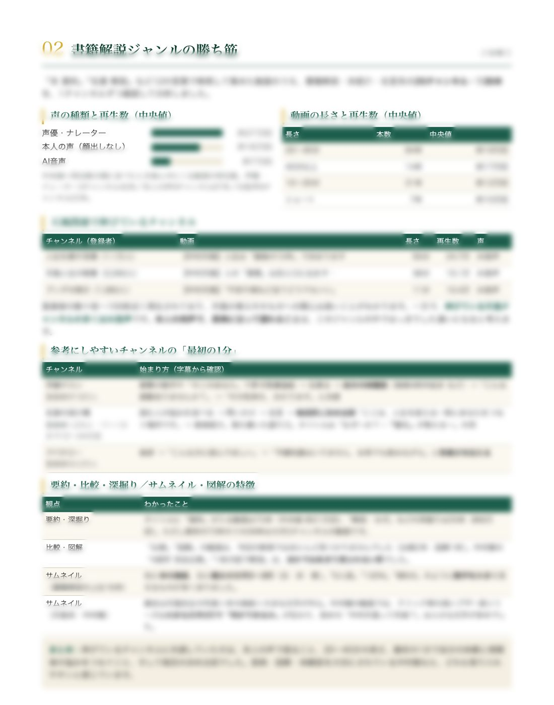

07
リサーチ / 事例紹介
2026 —
YouTubeチャンネルの
市場リサーチ
競合や視聴者の動きを調べ、次の一手につながる提案までまとめる、YouTubeチャンネルのリサーチをお受けしています。
ここでは、その一例として書籍解説チャンネルを運営するお客様の事例をご紹介します。

納品したレポートの1ページ。お客様の情報を守るため、見出しと項目名以外はぼかしています。
- 分析した競合
- 26チャンネル
- 分析した動画
- 138本
- 納品したレポート
- 8ページ
この事例でのご相談
「どんな動画が伸びていて、自分のチャンネルは何を強みにすればいいか知りたい」というご相談でした。
数字を集めて終わりにせず、課題の特定から、すぐ使える改善案まで一つのレポートにまとめています。
5つの角度から調べました
| 調べたこと | 使ったデータ | お渡ししたもの |
|---|---|---|
| チャンネルの現状 | お客様からご提供いただいた分析データ | 伸びている動画・伸び悩んでいる動画と、その理由 |
| 本の需要 | 関連書籍の売れ行き × YouTube上の競合の強さ | まだ動画が少なく、狙い目になる本のリスト |
| タイトル | 表示回数とクリックのされ方 | そのまま使える改善タイトルと、その理由 |
| 検索キーワード | キーワード調査のデータ | 需要があるのにタイトルに入っていない言葉 |
| 競合の型 | 競合26チャンネルの声の種類と「最初の1分」 | お客様の強みと結びつけた構成の提案 |
AIとの分担
YouTubeの公開データの収集（YouTube Data API）と集計、まとめの下書きはAIと一緒に進めました。
何を調べるか、数字をどう読むか、何を提案するかは自分で決め、数字と内容はすべて自分の目で確かめています。
AIとの仕事のしかたは別にまとめています。
お客様からいただいた言葉
「数字の分析から課題の特定、今日から使える改善タイトルまで一貫していて、実用的な資料になっている」とご評価いただきました。
「専門業者に頼んだら5〜8万円ほどの内容」とまで言っていただけて、とても励みになりました。
この事例について
| 期間 | 2026年10月 |
|---|---|
| クライアント | 書籍解説チャンネルを運営する個人のお客様 |
| 担当 | 調査の設計・データ収集・分析・考察・レポートのデザイン |
| 使用ツール | YouTube Data API / Python / Googleスプレッドシート / Claude |
| 納品 | PDFレポート8ページ・分析用スプレッドシート |